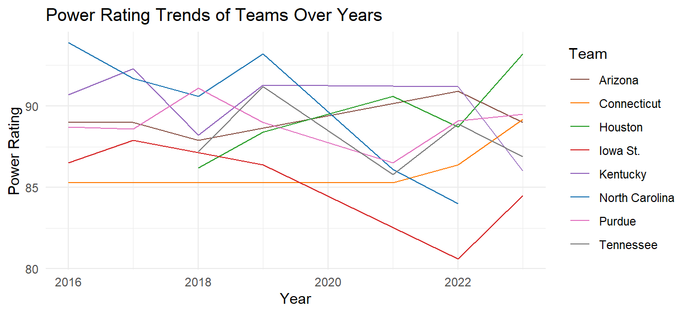
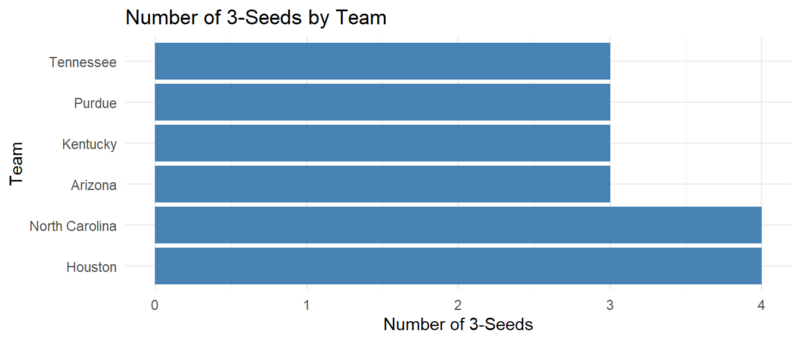

public_picks <- public_picks |>
select(TEAMNO,FINALS)
index <- index |>
rename(TEAMNO = `TEAM NO`)
index_picks <- index |>
left_join(public_picks, by = "TEAMNO")
# Remove any extraneous characters (e.g., percentage signs, spaces)
index_picks$FINALS <- gsub("%", "", index_picks$FINALS) # Remove percentage signs
index_picks$FINALS <- gsub(" ", "", index_picks$FINALS) # Remove spaces
# Convert FINALS to numeric
index_picks$FINALS <- as.numeric(index_picks$FINALS)
#Select variable
index_picks <- index_picks |>
select(YEAR,TEAMNO,TEAM,SEED,ROUND,POWER,FINALS) |>
filter(YEAR >= 2016)Do you want to know what’s the exciting part in NCAA March Madness? And which team is more likely to win the prize? Come on in and have a look!
What is March Madness and what’s the problem
March Madness is just around the corner, and it is one of the biggest annual sporting events in the US. Every year, 68 college basketball teams face off in a high-stakes, knock-out tournament to claim the title of NCAA Men’s Division I champion[1]. What makes it so thrilling is that no one really knows who will get the trophy.
So, what influences the public picks? It’s usually a mix of things: past performances, current season form, and, of course, public sentiment. In this analysis, we can dig into how teams’ past achievements and their current season’s results shape the predictions for 2024.
Where the data comes from
I got the data from Kaggle. To keep it simple and efficient, I only focused on three datasets, “538Ratings”, “public_picks”, and “Heat_Check_Tournament_Index”. To make the data easier, I joined “public_picks” and “Tournament_Index” into one datasets called “index_picks”. What’s more, I removed special symbols like percentage signs and spaces in ‘FINALS’ and converted it into numeric. After that, I kept several variables that might be useful for visualizations and analysis, also, I filter the records after year 2016 to keep the time period same.
There are seven variables in the dataset “index_picks”. They are ‘YEAR’, ‘TEAMNO’, ‘TEAM’, ‘SEED’, ‘ROUND’, ‘POWER’ and ‘FINALS’. ‘YEAR’ is the ending year of the team’s season, ‘TEAMNO’ and ‘TEAM’ all represent a unique college basketball team, ‘SEED’ shows the preliminary ranking for the March Madness tournament, ‘POWER’ is the calculation of the team’s strength relative to other teams in the tournament by Heat Check, ‘FINALS’ summaries the percentage of people who picked the team to win the game in the Finals.
There are also seven variables in the dataset “538Ratings”. Some of them are exactly the same as those in “index_picks”. The various ones are ‘POWER RATING’ and ‘POWER RATING RANK’. The previous one is also the calculation of the team’s strength but calculated by 538. The other one shows the rank of power rating across all tournament teams.
Connecticut comes to the top in public picks
I filtered out the top eight colleges that have the most opportunity to win the grand final of 2024 season in people’s opinion. Through Table 1, Connecticut stands out as a fan favorite with 34.92% of people picking them to win the finals. That’s really a great lead compared to other powerful teams like North Carolina(12.1% picking rate) and Purdue(10.22% picking rate). This tells us that Connecticut is currently seen as the top contender for the championship, at least in the minds of the fans.
| TEAM | FINALS |
|---|---|
| Connecticut | 34.92% |
| North Carolina | 12.1% |
| Purdue | 10.22% |
| Houston | 9.27% |
| Iowa St. | 4.78% |
| Arizona | 4.06% |
| Kentucky | 3.48% |
| Tennessee | 3.02% |
Historical performance also matters
Here is the interesting part. When we look at the power ranking over the years(Figure 1), North Carolina had a high rank in 2016 but has a fluctuating performance in the next years. According to the NCAA history, North Carolina has the most NCAA tournament wins, with 131 wins[2], which means it is a superpower in all times. Other strong teams like Kentucky and Purdue also have ups and downs. On the flip side, Connecticut has shown a strong upward trend in recent years, which aligns with its high probability to win the finals and gives people more confidence.

Tops seeds and consistency
Another interesting part is that, when we look at the plot Figure 2, Houston and North Carolina dominate here, earning top seeds the most times. What’s surprising is that Connecticut is one of the most popular teams in 2024 season although it hasn’t been a top-three seed once.

To wrap up, what do these mean for the 2024 March Madness? Teams like North Carolina, Purdue, and Houston remain forces. Their consistent rankings over multiple seasons highlight their outstanding historical performances, making them powerful opponents for any team they encounter, even if they may not always reach the very top. Meanwhile, Connecticut might be the Cinderella of the tournament, it’s the team which has captured the public’s confidence thanks to its recent form, even though not always being in the top seeds.
As the competition going on, it will be interesting to see if Connecticut can live up to expectations and make history or if another team will defeat them and take the trophy.
Reference
[1] Wikipedia Contributors. (2021, March 3). NCAA Division I Men’s Basketball Tournament. Wikipedia; Wikimedia Foundation. https://en.wikipedia.org/wiki/NCAA_Division_I_Men%27s_Basketball_Tournament
[2] Wilco, D. (2023, March 8). March Madness history: A comprehensive guide to the men’s tournament | NCAA.com. Www.ncaa.com. https://www.ncaa.com/news/basketball-men/article/2023-03-08/march-madness-history-comprehensive-guide-mens-tournament
[3] Amin, N. (2024). March Madness Data. Kaggle.com. https://www.kaggle.com/datasets/nishaanamin/march-madness-data/